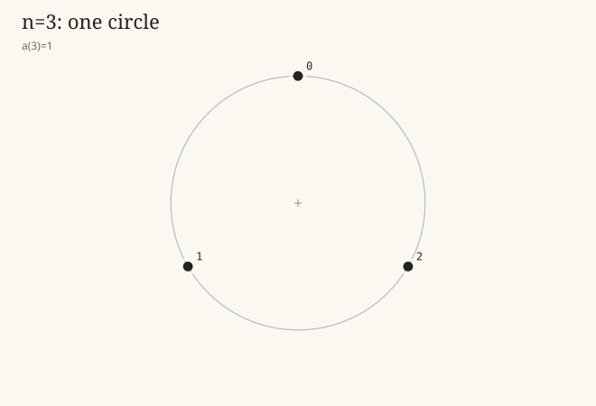
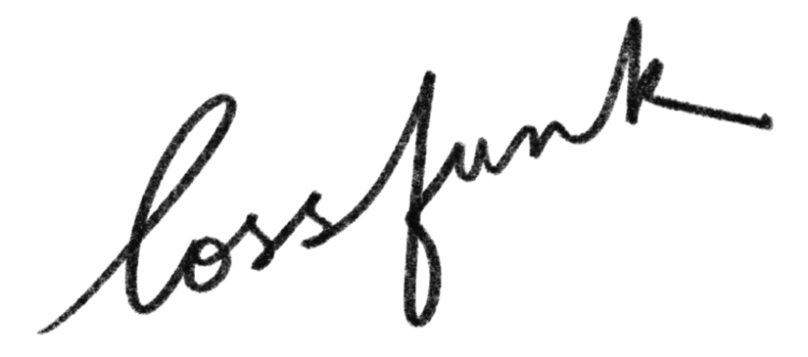
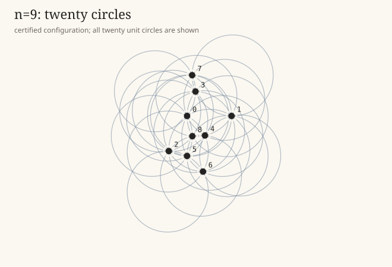
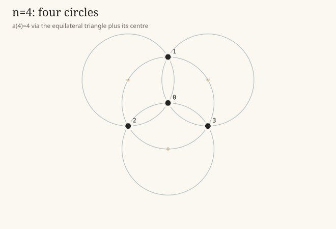
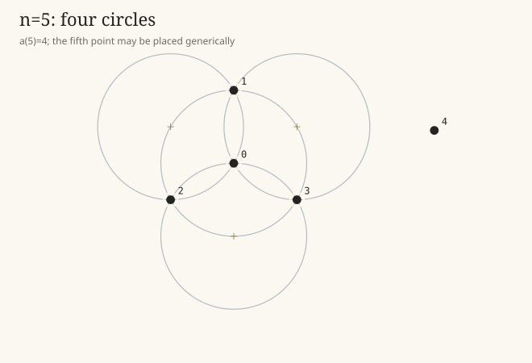
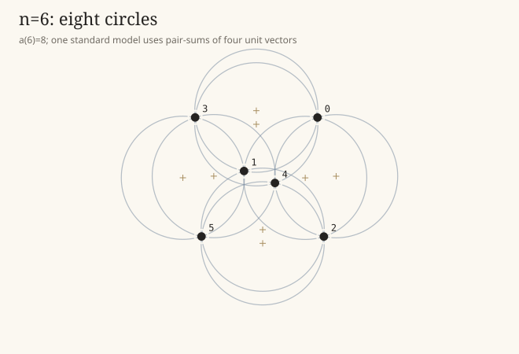
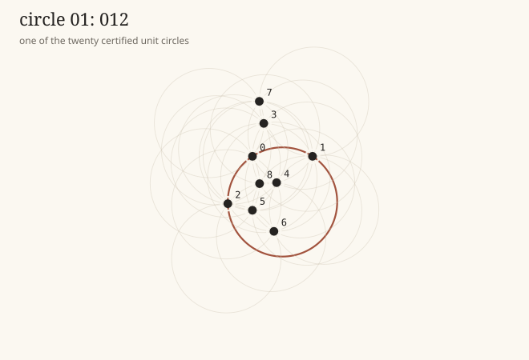

n=3, a(3)=1
An equilateral triple on a unit circle gives the only possible counted circle.

Erdős Problem 104 asks how many unit circles can be forced by a finite set of points in the plane. OEIS A003829 records the exact small values for the version where each counted circle must pass through at least three of the chosen points.
This page gives the ninth value: an explicit nine-point construction reaches 20 counted circles, and a finite exact certificate rules out 21, 22, and 23.
Result: For nine points in the Euclidean plane, a(9)=20.

Given a finite set P of n points in the Euclidean plane, count the distinct unit circles that contain at least three points of P. Let a(n) be the maximum possible count.
The classical table begins a(3),…,a(8)=1,4,4,8,12,16. The construction below attains 20 for n=9. The upper-bound certificate proves that 21, 22, and 23 cannot occur; the elementary bound already rules out every larger number. The two halves meet at 20.
The first six known values help explain what is being counted. For n=3,4,5,6 the panels are drawn from explicit coordinate constructions. For n=7, the panel replots the exact coordinates displayed in the OEIS/Martin Fuller illustration. For n=8, the value is 16, but we could not find a public illustration or coordinate source to replot.

An equilateral triple on a unit circle gives the only possible counted circle.

The centre of an equilateral triangle plus the three vertices gives four unit circles.

The fifth point can be placed generically, without creating any new counted unit circle.

A pair-sum construction from four unit vectors realizes the classical value eight.

Exact coordinate construction from the OEIS/Martin Fuller illustration; exactness is Harborth–Mengersen.
| n | a(n) | provenance used here |
|---|---|---|
| 3,4,5,6 | 1,4,4,8 | Small explicit constructions, matching the classical table. |
| 7 | 12 | Harborth–Mengersen exact value; OEIS links Martin Fuller’s visual illustration of a(3) through a(7). |
| 8 | 16 | Recorded in OEIS A003829; no public illustration or coordinate source was found for this page. |
The certified nine-point pattern is all-triple: every counted circle contains exactly three of the nine points. The twenty intended triples are
Partition the labels as A={0,1,2}, B={3,4,5}, and C={6,7,8}. The pattern consists of the two internal triples 012 and 345, together with all cross triples from A×B×C except the nine triples whose three within-block indices sum to 0 mod 3. This places the construction in the all-triple 20T,s=6 deficiency layer.

The buttons switch between the twenty certified unit circles. The inactive circles are left faintly visible to keep the full arrangement in view.
These decimals are for orientation only. The exact construction is not defined by these decimals; it is defined by a rational polynomial system and a rational interval certificate.
| point | x | y |
|---|---|---|
| 0 | 0.0000000000000000 | 0.0000000000000000 |
| 1 | 1.0978941215225699 | 0.0000000000000000 |
| 2 | -0.4505445972749385 | -0.8677385486715592 |
| 3 | 0.2071734593478844 | 0.6025968098608510 |
| 4 | 0.4412929999324647 | -0.4821327244762682 |
| 5 | -0.0011169350327177 | -0.9882026340561421 |
| 6 | 0.3923352634888004 | -1.3742531016840638 |
| 7 | 0.1250000000000000 | 1.0065145530125046 |
| 8 | 0.1300142607588310 | -0.5000000000000000 |
The proof that a(9)≤20 has a simple outer shell and an exact finite core. The outer shell says that a nine-point configuration cannot have more than 23 counted unit circles. The finite core then eliminates 23, 22, and 21.
Let C be a counted circle, and let s(C) be the number of selected points on it. A circle with s(C) selected points uses binom(s(C),2) unordered point-pairs. A fixed pair of points can lie on at most two unit circles: geometrically, the two possible centers are the two intersections of the unit circles centered at the two points. Therefore
For n=9, the right-hand side is 2·binom(9,2)=72. Since every counted circle has at least three points, every counted circle uses at least three pair-slots. The raw estimate gives m≤24.
Pinchasi’s Gallai–Sylvester theorem for pairwise-intersecting unit circles improves this by one pair-slot for every n≥5:
For n=9 this gives a(9)≤floor((72−1)/3)=23. Hence no number above 23 needs a separate certificate. To prove a(9)≤20, it remains only to rule out m=23, m=22, and m=21.
21, 22, and 23.0,…,8. A triple-circle is written T, a four-point circle Q, and a five-point circle R5.a(3),…,a(8), and the four-point closure lemma.The upper-bound certificate does not search over coordinates. It searches over finite incidence templates, and only then applies exact algebraic tests to decide whether a surviving template could possibly be realized by points and unit circles in the plane.
For an all-triple profile, write codeg(i,j) for the number of intended triples containing pair ij, and define
The number δij is the unused capacity of pair ij. Since there are 72 possible pair-slots on nine points and each triple uses three slots,
At every vertex i, the weighted deficiency degree is even:
Mixed profiles use the same accounting, but a four-point circle Q uses all six internal pairs of its four support points, and a five-point circle R5 uses all ten internal pairs of its five support points.
Every subset S of the nine labels must induce no more circles than are possible on |S| points. Thus every induced subtemplate of size 3,4,5,6,7,8 is capped by 1,4,4,8,12,16. This matters because many formal pair-capacity patterns already contain, for example, too many circles on seven of the labels.
If four points A,B,C,D have unit circles through three of the four triples, then the fourth triple also lies on a unit circle. A quick proof: translate A to the origin. Let the centers of ABC, ABD, and ACD be x,y,z. Reflection across the midpoints gives B=x+y, C=x+z, and D=y+z. Then B,C,D lie on the unit circle centered at x+y+z.
Suppose two counted unit circles B and B′ share the point-pair i,j. Their centers are the two unit-circle centers through that same pair, so they are mirror images across the midpoint of pipj. Therefore
These are linear equations, one scalar coordinate at a time. Constants always form a one-dimensional solution space; a non-collinear planar realization needs scalar solution-space dimension at least three and must not force any original point labels to coincide.
After quotienting by constants, the remaining scalar solution space is an affine coordinate skeleton. A Euclidean planar realization is equivalent to a positive semidefinite Gram form G of rank at most two. For each intended incidence pi∈B, the unit-radius condition becomes a linear equation in the entries of G:
If the linear Gram system is inconsistent, the incidence template cannot be geometric. If it leaves a family, the certificate imposes rank at most two by exact 3×3 minor equations. Terminal branches are then eliminated by exact ideal infeasibility, point collisions, or forced extra incidences.
For an all-triple profile, a template is supposed to contain only triple-circles. If the algebra proves that some outside point v∉B must satisfy
on every Gram solution, then the alleged triple-circle actually has a fourth point. That template is discarded from the all-triple case. This is how the last residual m=21 orbits disappear.
The following table is the high-level certificate summary used to turn the machinery above into the upper bound a(9)≤20.
| target | case split | exact terminal outcome |
|---|---|---|
m=23 | All triples only. Total deficiency is 3; parity forces the deficiency graph to be a triangle. Adding that missing triangle gives a twofold triple system on nine points. | All one-block deletions from the 36 non-isomorphic TTS(9) templates are checked. Terminal counts: 536 nonsimple, 163 nullity 1, 107 nullity 2, 50 nullity 3 with point collision, 8 nullity 4 with point collision, and 0 geometric survivors. |
m=22 | Only 22T and 21T+Q are pair-slot compatible. | For 21T+Q, the two weighted deficiency cases have zero survivors after local-cap, closure, and reflection tests. For 22T, the missing-pair graph reduces to a six-cycle, two triangles sharing a vertex, or two disjoint triangles; all rank-two geometric survivor counts are zero. |
m=21 | Profiles: 21T, 20T+Q, 19T+2Q, and 20T+R5. | The mixed profiles are eliminated first: the R5 binary feasibility system is infeasible; the two-quad cases die by reflection rank; the one-quad case reaches 116 reflection survivors and zero rank-two Gram survivors. The all-triple 21T case starts from 74 weighted classes and 1,698,371 completions; after local caps, closure, reflection, Gram tests, rank-two minors, and forced-extra-incidence identities, every final family has 0 survivors. |
Consequently, any nine-point configuration with at least 21 counted unit circles would have to appear in this finite search, but every possible incidence template is certified impossible. Therefore a(9)≤20.
The construction must also be certified as a real Euclidean configuration with no hidden extra counted circles. The lower certificate does this with exact rational interval arithmetic.
The reflection equations reduce the twenty centers and nine points to a rational linear parametrization. With variables
the certificate stores a rational matrix whose first nine rows define the points and whose next twenty rows define the intended centers. The sixty intended point-center incidences reduce, up to sign, to fifteen rational displacement rows r1,…,r15. The fifteen unit equations are
Five gauge equations remove translation, rotation, and scale choices: Z0x=0, Z0y=0, Z1y=0, Z7x=1/8, and Z8y=−1/2. Altogether this is a square system of twenty rational polynomial equations in twenty real variables.
Let F:R20→R20 be this polynomial map. The certificate stores a rational center c, a rational approximate inverse C, and the interval box
Using exact rational interval arithmetic, the verifier evaluates
and proves K(c,X) lies strictly inside the interior of X. It also proves the contraction bound
Therefore the polynomial system has a unique real zero in the box. This supplies the real points and centers used by the construction.
| claim | certified check |
|---|---|
| All intended incidences have unit distance. | Every intended center-point difference is exactly one of the fifteen unit rows, up to sign. |
| The nine labelled points are distinct. | The interval proof gives min ||Pi−Pj||² > 0.09721369299616801. |
| The twenty counted circles are distinct. | The interval proof gives min ||Qa−Qb||² > 0.0051978623108992735. |
| No intended triple-circle has a fourth point. | For nonincident center-point pairs, | ||Qj−Pi||²−1 | > 0.06577095439165559. |
| No unlisted triple lies on a unit circle. | For every non-listed triple i,j,k, the point-only unit-circumradius polynomial excludes zero. The weakest certified bound is for triple 458: |Φ458| > 0.07832522266666986. |
The polynomial used for the last row is
For a non-collinear triple, Φijk=0 is equivalent to circumradius one. There are binom(9,3)=84 triples in total. Twenty are listed. The remaining 64 are all interval-excluded. Hence the construction has exactly twenty counted unit circles, not merely at least twenty.
The twenty-circle configuration was found through the same incidence-template search that powers the upper-bound certificate, not by tuning the visible drawing.
The project first had a certified nine-point construction with nineteen counted circles. The upper-bound search then narrowed the remaining possible twenty-circle cases. The successful candidate appeared in the all-triple 20T,s=6 deficiency layer.
| stage | what happened |
|---|---|
| frontier | The manuscript records 266 weighted deficiency classes in the 20T,s=6 layer. |
| filters | Closure, reflection, nullity, affine-Gram, and forced-extra-incidence tests reduced the terminal pipeline to 46 affine-Gram residual cases. |
| hit | Those residuals were concentrated in classes 9,10,87,88,140,239,262; class 140 gave the isolated rank-two realization. |
| normalisation | The candidate note records the rational gauge choices x7=1/8 and y8=-1/2, which produced the clean coordinates used here. |
| certificate | The numerical candidate was replaced by a rational polynomial system and a Krawczyk isolating box, giving the formal lower certificate. |
The candidate note’s high-precision recount found exactly twenty distinct unit circles across all binom(9,3)=84 triples, with no near-collisions and no near-extra circle. At that stage it was still only a numerical discovery. The final proof is the interval certificate above: it isolates a real root and proves the non-listed triples stay away from unit circumradius.
The nine-point construction also gives lower bounds for the next two values. If A,B,C lie on a unit circle centered at Q, put
Then ABD, ACD, and BCD lie on unit circles with centers A+B−Q, A+C−Q, and B+C−Q. Completing the certified 012 circle gives a(10)≥23. Completing both 012 and 345 gives a(11)≥26.
The manuscript also records certified lower bounds from exact square- and triangular-lattice checks, together with the general Pinchasi upper bound used here.
| n | lower bound | upper bound | source |
|---|---|---|---|
| 10 | 23 | 29 | one completion of the certified nine-point construction |
| 11 | 26 | 36 | two completions of the certified nine-point construction |
| 13 | 29 | 51 | exact triangular-lattice certificate |
| 16 | 40 | 79 | exact triangular-lattice certificate |
| 20 | 54 | 126 | exact triangular-lattice certificate |
| 25 | 74 | 199 | exact square-lattice certificate |
| 40 | 164 | 519 | exact triangular-lattice certificate |
| 80 | 462 | 2106 | exact triangular-lattice certificate |
| 120 | 715 | 4759 | exact triangular-lattice certificate |
| 169 | 1350 | 9463 | exact triangular-lattice certificate |
1,4,4,8,12,16, the small-value table, and the Martin Fuller illustration link.a(3) through a(7). Used for the exact coordinate panel shown here for n=7.n=7.f(8)=16 and asks for the next values.a(n)≤floor((n(n−1)−1)/3).ChatGPT 5.5 Pro and Codex were used in finding the construction, writing the manuscript, and organising it as a blog.
{kind=link}